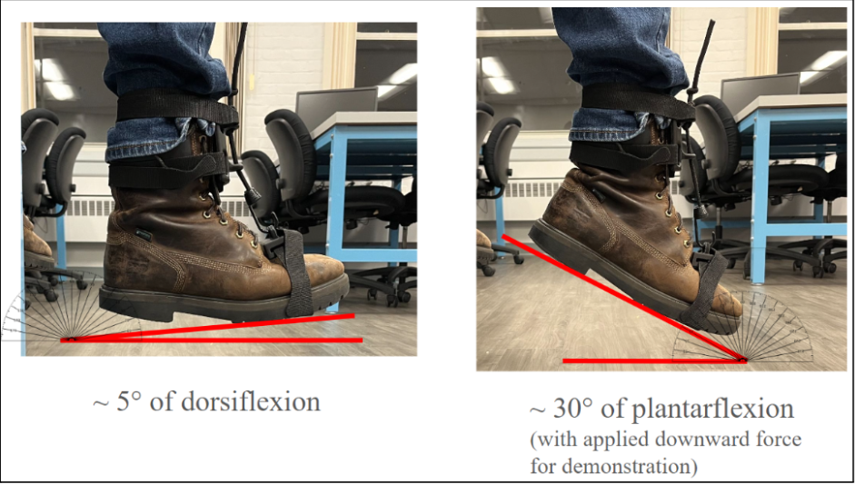

Exoskeleton Hand
Development of a wearable hand exoskeleton exploring mechanical design, CAD, rapid prototyping, and iterative product development.
> View Project →Biomedical & Mechanical Engineer
I design and prototype engineering solutions at the intersection of mechanical design, biomechanics, and human movement.
Worcester Polytechnic Institute · B.S. Biomedical Engineering & Mechanical Engineering · 2026
My work focuses on translating engineering concepts into physical systems through CAD, prototyping, testing, and iterative design. I am particularly interested in medical devices, biomechanics, assistive technology, and human-machine interfaces.
Development of a wearable hand exoskeleton exploring mechanical design, CAD, rapid prototyping, and iterative product development.
> View Project →
Development of a wearable system for investigating biomechanical loading and movement during pickleball.
> View Project →
Mechanical design and prototyping of a device intended to assist with drop-foot during walking.
> View Project →I am currently interested in engineering opportunities involving mechanical design, biomedical engineering, medical devices, biomechanics, prototyping, and product development.
Get in Touch →